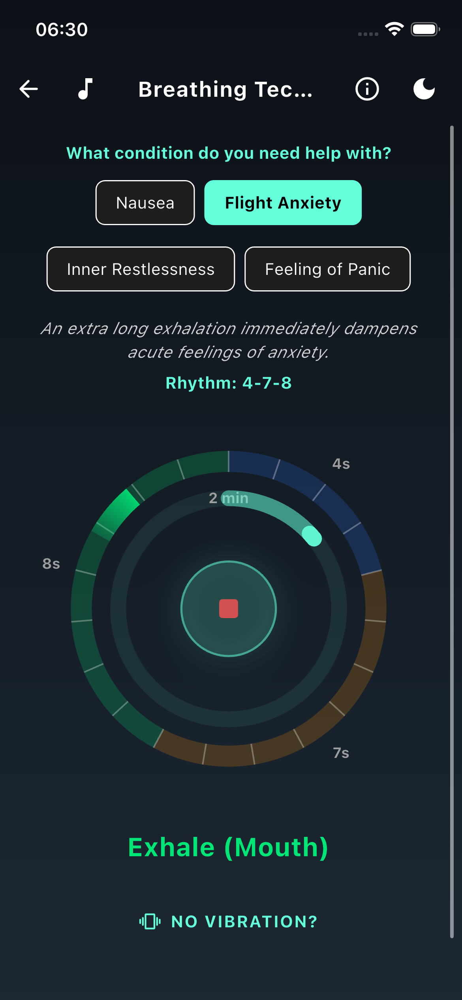
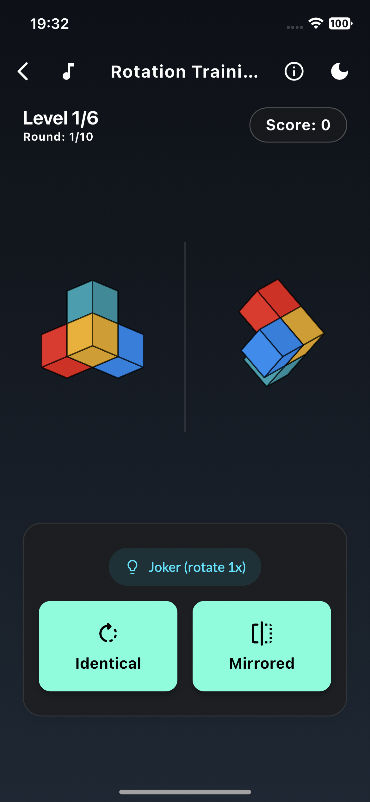

Immediate Help
The Artificial Horizon
Motion sickness often occurs when the eye reports a standstill – for example, when reading in a car or in the windowless inside cabin of a cruise ship – but the balance organ simultaneously feels the movement. The artificial horizon resolves this sensory conflict by making the real movement visible again.
The Application: On the screen, you see the bow of a ship and the sea with a mountain range on the horizon. While the bow remains rigid, the background image moves based on the sensor data of your smartphone, exactly in sync with the actual sway (roll and pitch) of the vehicle. Your brain thus gets the missing visual confirmation of the movement (inertial cues) back.

Immediate Help
4-2-6 Breathing
This breathing technique specifically targets the body's resting nerve (parasympathetic nervous system). The prolonged exhalation signals safety to the brain and helps to gently calm the 'fight-or-flight' response. This promotes your relaxation during acute stress or discomfort – and is also an ideal companion for acute travel anxiety and fear of flying.
The Application: Viativity guides you visually and haptically through the rhythm: inhale for 4 seconds, hold for 2 seconds, exhale for 6 seconds. Use this for at least 2 minutes when feeling acute discomfort or stress.

Prevention
Mental Rotation
Trained spatial reasoning helps the brain process movement data more efficiently and resolve conflicting signals faster. This spatial visual training (visuospatial training) helps you optimally build up your resilience.
The Application: Decide: Is the right figure identical (just rotated) or mirrored? You have 1 joker per level to help you decide. IMPORTANT: This is purely a preventive training. Practice for 15 minutes daily for 2 weeks before your trip to prepare your brain calmly.
